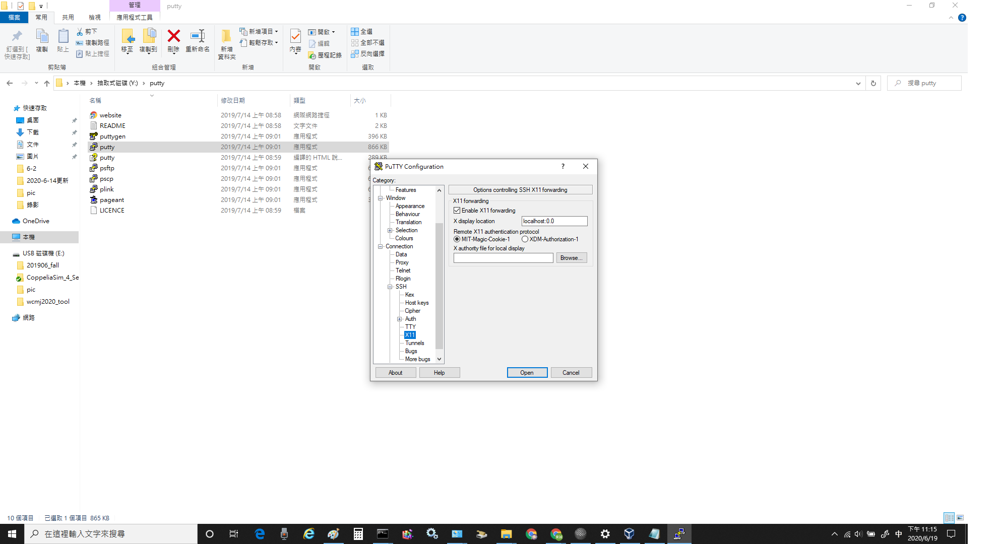

week10~14 <<
Previous Next >> W12-W15 assesment
week15~18
week15:
FileZilla 虛擬主機文件共享設定
1. 設定putty -> SSH -> X11 輸入localhost:0.0
2. 設定的ip為虛擬主機裡面自己的ip
3. 按save -> open -> 輸入密碼kmol2020
4. 開啟Filezilla
5. 新增一個自己ip的站台
6. 設定協定SFTP -> 主機 127.0.0.1 -> 連接埠 22 -> 使用者 kmol2020
7. 輸入密碼kmol2020
8. 設定好即可在此處進行虛擬主機資料的下載、修改、上傳
week16:
ubnutu ipv6伺服器連線設定
IPv6 遠端控制設定 :
1. 老師倉儲cd2020下的downloads的w13_ipv6_assignment.txt，ipv6遠端控制設定
2. 子網路首碼長度輸入64、預設匝道輸入2001:288:6006:17::254
3. 開啟虛擬主機，設定整體系統埠號
4. 啟動Ubuntu輸入密碼kmol2020 -> 開啟LXTermial -> 進入cd2020pj1
5. git pull檢查更新 -> cd docs/cmsimde
6. 輸入vi wsgi.py，將host改為個人主機IP
7. 設定putty -> SSH -> X11 輸入localhost:0.0

8. 按save -> open -> 在putty輸入密碼kmol2020
9. 開啟Xming -> 輸入xterm&
10. 進入tmp/cd2020pj1/docs/cmsimde -> 輸入python3 wsgi.py
11. 用瀏覽器輸入網址https://[2001:288:6004:17:2020:5253]:17443
12. 關閉proxy後重新整理即可連上
week17:
協同產品設計實習期末報告影片 :
week10~14 <<
Previous Next >> W12-W15 assesment